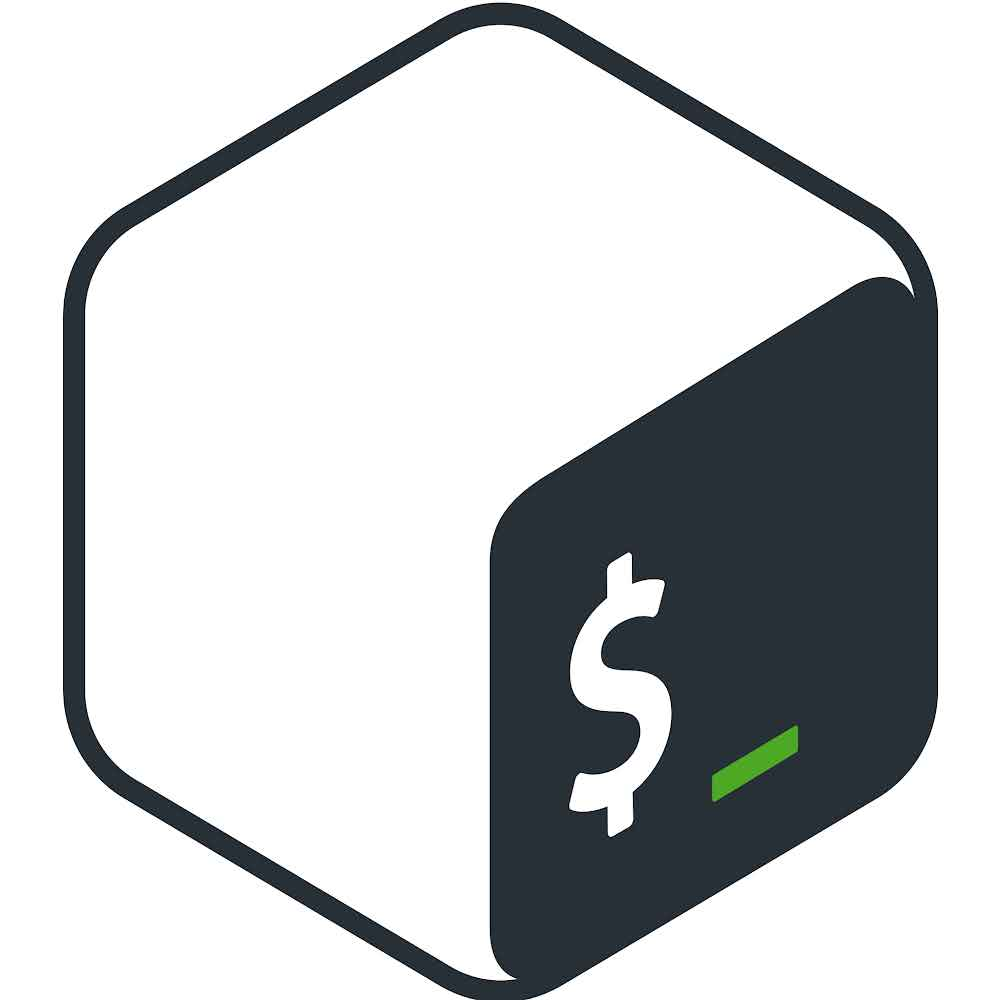

Jacob Stanaford's Portfolio
Hello, my name is Jacob Stanaford! Welcome to my portfolio website.
I am beyond excited to share my experiences and background on this site!
Thank you for stopping by and enjoy!
A programming language is for thinking about programs,
not for expressing programs you've already thought of.
It should be a pencil, not a pen.
-Paul Graham
Programming Languages & Tools

These are the technologies I have the most professional experience with, ranging from backend scripting and databases to modern programming languages and machine learning. Each of these tools has played a significant role in my journey as a developer.
Professional Experience
YGS Group
June 2025 – Present
- Senior Software Developer
Leading development on enterprise e-commerce platforms, automation systems, and API services across a diverse technology stack. Projects span from Laravel/PHP, .NET/ASP.NET, Node.js/TypeScript, and Python applications.
Key Contributions:
- E-Commerce Platforms: Built and maintained multiple Laravel/Lunar PHP storefronts with payment processing, shipping integrations, and custom template systems
- Automation Systems: Developed comprehensive order processing automation with SFTP, API integrations, and queue-based job processing
- API Services: Created TypeScript/Express.js microservices including FedEx shipping API wrapper and Cloudflare bot verification service
- Web Scraping: Developed and maintained advanced Python/Scrapy platforms with machine learning capabilities for data collection and analysis
- DevOps: Implemented CI/CD workflows, Docker containerization, and automated deployment systems
Technologies: PHP 8.1+, Laravel 10.x, Lunar, .NET/ASP.NET, Node.js, TypeScript, Python, Docker, Filament, Livewire, Meilisearch, and more
WebFX
March 2020 – May 2025
- Senior Developer
Progressed from Jr. Web Developer to Senior Developer over 5 years. Led teams, architected solutions, and delivered high-impact web projects for a diverse client base.
Prosper IT Consulting – Internship #1
Python/Django Web Scraping App | Sept 2019 - Oct 2019
Completed a full sprint to develop a Python Django web application dedicated to advanced web scraping, data collection, and reporting.
Prosper IT Consulting – Internship #2
C# ASP.NET Web Application | Nov 2019 - Dec 2019
Led a sprint focused on building a robust web application using the C# ASP.NET tech stack, emphasizing scalable architecture and modern UI/UX.
Education Experience

Stevens Institute of Technology
Master of Science in Computer Science - Program Details
2023 – 2029 (currently enrolled)
The Stevens MSCS program is designed to align with the latest industry trends, preparing graduates for success in areas such as AI, machine learning, business intelligence, analytics, and advanced software development. My coursework emphasized technical proficiency in enterprise software design, mobile and cloud computing, agile methods, and algorithm design.
- AI & Machine Learning: Mathematical Foundations, Machine Learning Fundamentals, Deep Learning, Natural Language Processing
- Business Intelligence & Analytics: Business Analytics, Applied Analytics, Augmented Intelligence, Big Data Technologies, Web Mining
- Software Development: Mobile Systems, Web Programming, Object-Oriented Design, Enterprise & Cloud Computing, Agile Methods, Database Management
My focus on AI and machine learning includes hands-on experience with Python, TensorFlow, Keras, and modern NLP techniques, as well as practical projects in deep learning and data-driven applications. This education has provided a strong foundation for tackling real-world challenges in both research and industry.

The Tech Academy
Software Developer Bootcamp - Program Details
15-week Intensive Bootcamp
What I learned from the program:
- Full-stack web and software development: front-end & back-end
- Core languages: Python, JavaScript, HTML, CSS, SQL
- Frameworks: Django, Bootstrap
- Version control with Git & GitHub
- Agile, Scrum, and DevOps methodologies
- Capstone project for real-world experience
The bootcamp emphasized hands-on, project-based learning, which helped me become job-ready and confident in my ability to contribute to modern software teams. I also benefited from job placement support and career coaching, which gave me a strong start in the tech industry.
Messiah College, PA
Bachelor of Science in Music Education
August 2015 – May 2019
- Music Education K-12, concentration in vocal studies and piano
- Certified Educator in the state of Pennsylvania
- GPA: 3.55 (cum laude)

Interested in seeing my projects?
Click below for a link to my GitHub, where you can explore my portfolio, code samples, and open source contributions.
ABOUT ME
With over six years of dedicated education and hands-on experience, I am a passionate software developer who thrives on building impactful solutions. My journey has taken me from earning a Bachelor's in Music Education to completing an intensive software development bootcamp, and now pursuing a Master's in Computer Science at Stevens Institute of Technology.
I have developed expertise in full-stack web and software development, with a strong foundation in PHP, JavaScript, TypeScript, C#, and modern frameworks. My professional experience includes leading development teams, architecting scalable applications, and collaborating on real-world projects in both educational and corporate settings.
I am committed to continuous learning, with a focus on AI, machine learning, and cloud technologies. I am always eager to take on new challenges, contribute to innovative teams, and deliver high-quality software that makes a difference.
View My Resume

Contact
Interested in connecting, collaborating, or discussing career opportunities? Reach out to me directly!
I look forward to hearing from you!